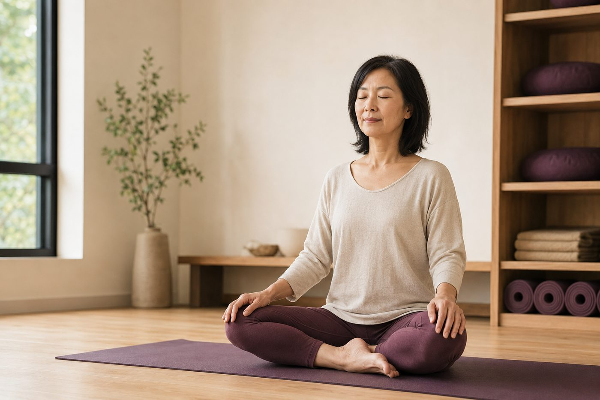

什麼是「體位法（Asana）」？瑜伽動作不只是拉筋

你有沒有這種印象：瑜伽就是一群人把腿盤得很開、身體折得很低，柔軟度好到不可思議？於是你心裡想「我筋這麼硬，大概不適合」。但如果我告訴你，瑜伽動作的原意，其實跟「拉多軟」幾乎沒關係——它練的是另一件事，而且那件事，久坐的你反而最需要。
先搞懂：「Asana」原本是什麼意思
體位法（Asana）這個字來自梵文，最早的意思很樸素，就是「坐姿」、「座位」——古代練瑜伽的人拿來打坐的那個姿勢。後來在經典《瑜伽經》裡，對體位法只留下一句很短的定義：「sthira sukham asanam」，翻成白話是「穩定而舒適的姿勢」。
請把重點放在這兩個詞上：穩定，還有舒適。它沒有說「柔軟」，沒有說「高難度」，更沒有說「折得越低越好」。也就是說，一個體位法做得對不對，標準從來不是你彎得多深，而是你能不能在這個姿勢裡既穩、又不勉強地待著，同時還能順順地呼吸。這跟多數人對瑜伽的想像，其實差很遠。
「越軟越厲害」，是最常見的誤會
很多人把瑜伽直接和「柔軟度表演」畫上等號：摸得到腳尖、能劈腿、後彎能彎成一個圈，才叫厲害。柔軟度當然是身體能力的一部分，但它只是其中一小塊——而且，過度柔軟如果沒有相對的穩定度撐著，不是本事，反而是風險。
身體的活動度（關節能活動的範圍）和穩定度（關節被控制住的能力），是一組必須平衡的搭檔：
- 只有活動度、沒有穩定度：關節像沒鎖緊的門片，晃來晃去，看起來很軟，其實容易在極限角度被拉傷、扭到。
- 只有穩定度、沒有活動度：身體很緊、動不開，一用力就找別的地方代償，結果東痠西痛。
- 兩者剛好：你能安全地用到身體該有的範圍，而且全程都控制得住——這才是體位法真正在追求的。
所以在瑜伽裡，「做到位」永遠比「做得深」重要。想更完整地理解這個觀念，可以接著看為什麼「做到位」比「做得深」更重要。
柔軟度不是瑜伽的終點，它只是「穩定 × 活動度」這組平衡裡的一半；另一半——你控制得住嗎——才是關鍵。
那瑜伽動作真正在練什麼？「身體覺察」
如果重點不是柔軟度，那體位法到底在練什麼？一個常被忽略、卻最核心的答案是：身體覺察，講專業一點叫「本體感覺」（proprioception）——你的大腦對身體各部位在空間中的位置、以及出力狀態的感知能力。
聽起來抽象，舉個例子就懂了。老師請你「把肩胛骨往下沉、往中間收」，有些人一秒就找到那個動作，有些人怎麼喬都喬不出來。這通常不是誰比較努力，而是他的大腦和那塊肌肉（例如菱形肌、下斜方肌）之間的「連線」太久沒用，訊號變得很微弱，喊了半天肌肉「聽不太到」。體位法練的，正是把這條連線重新接回來：在一個穩定的姿勢裡，慢慢去感覺「現在是哪裡在出力、哪裡該放鬆」。
對久坐的你，這件事為什麼特別重要
久坐，正是讓這些身體連線退化的頭號兇手。一天坐上七、八個小時，身體長期用不到某些肌肉，大腦就慢慢「忘記」怎麼指揮它們。被椅子壓著的臀大肌幾乎整天不出力，久了變得「叫不太動」（這其實是很多人腰痠卻找不到原因的隱藏因素）；髖部前側的髂腰肌一直處在縮短狀態，又緊又鈍；圓肩則讓胸前的胸大肌、胸小肌縮短，背後本該收緊的肌肉反而使不上力。
看懂這件事，你就會發現一個關鍵轉念：久坐族缺的，往往不是柔軟度，而是「連得上、控制得住」自己身體的能力。這也是為什麼很多人腿後（膕旁肌）明明很緊，一直拉卻怎麼拉都不鬆——因為緊有時不是肌肉真的短，而是神經覺得不安全、繃著在保護你；你越用力硬拉，它反而越警戒。與其硬拉，不如先讓身體重新「感覺到」並學會控制。
這也是壁繩瑜伽好用的地方：壁繩提供穩定的支撐與借力，讓你不必把力氣全花在「撐住不要倒」，大腦才有餘裕去感覺一個動作到底該哪裡發力。你可以先從認識壁繩瑜伽了解它怎麼用支撐幫你安全地找回身體覺察。
與其猜自己「哪裡緊、哪裡沒力」，不如先看清楚
現場的 AI 體態檢測會實際拍下你站姿的高低、前後與旋轉，把「感覺怪怪的」變成看得見的數據；老師再依這份結果告訴你，該先喚醒哪塊肌肉、該先放鬆哪裡。
預約首次 NT$199 AI 體態檢測今天可以先記住的一件事
下次練習，別再盯著「我有沒有比別人軟」。試著把 Asana 的原意帶進來，改成問自己三件事：我穩嗎？我還能順順地呼吸嗎？我感覺得到是哪裡在出力嗎？這三個問題，比多彎五公分有意義太多了。
也提醒你，身體覺察是慢慢長回來的，不是一堂課、一個動作就能到位。給自己一點時間，循序漸進，先求穩、再求範圍，你會發現自己不只是變軟，而是真的「拿回」了對身體的主導權。
本頁為體態與姿勢的一般衛教與練習分享，非醫療診斷或治療。若有疼痛、舊傷或特殊病史，請先諮詢合格醫療專業人員。